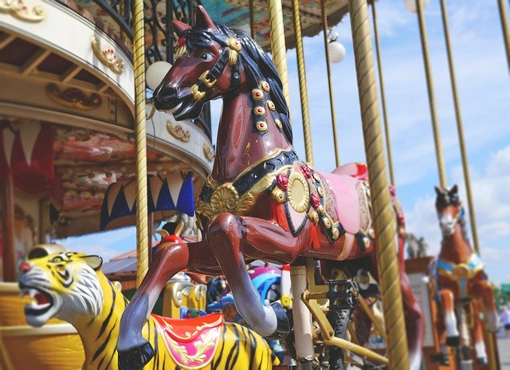
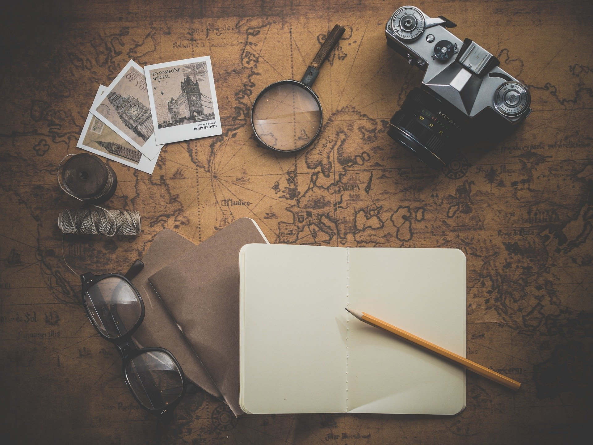
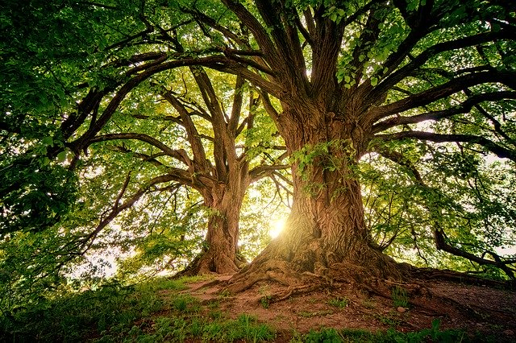
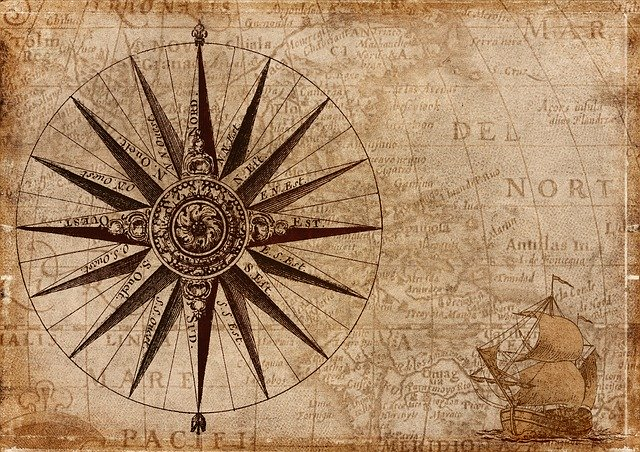
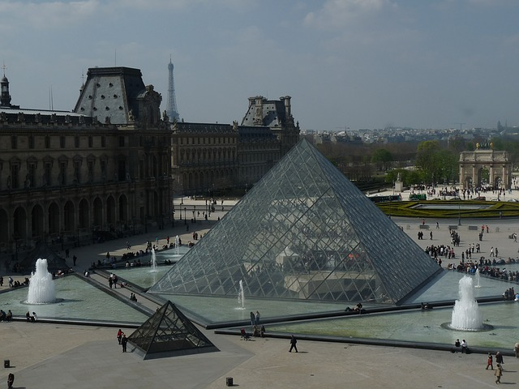
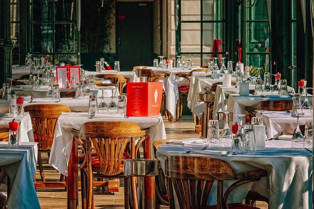

Conheça mais em cada viagem
Ideias para sair do roteiro comum.
Escolha um tema, descubra novos lugares e transforme curiosidade em planejamento.
Explore por interesse
O que você quer descobrir?
Selecione uma categoria para ver destinos e experiências.



